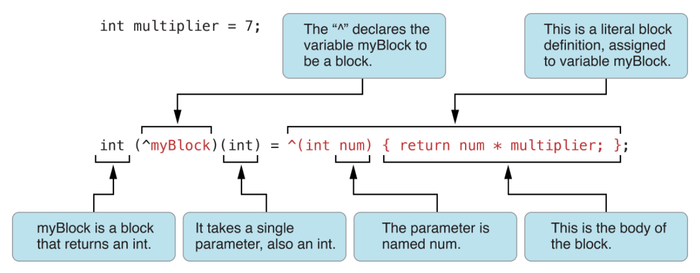
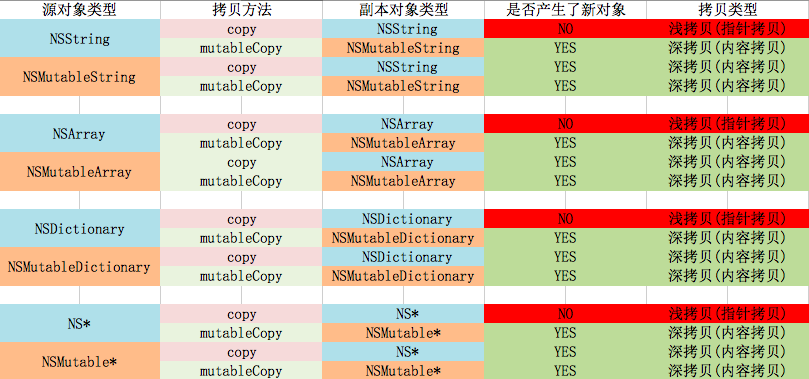

Block的使用

内存中的区域划分(预备知识)
- 栈区：由系统自动分配和释放，存放局部变量，函数的参数值等。容量小速度快，有序。
- 堆区：由程序员分配和释放，如果不释放出现内存泄露。程序会收回您的内存，容量大，速度慢，无序。
- 静态存储区：全局变量（外部变量）和静态变量都存放在静态区域。当程序结束时，系统回收
- 常量区：存放常量的内存区域，程序结束时，系统回收
- 代码区：存放二进制代码的区域
Block的修饰符为什么要用copy
copy 和 mutable Copy
NSString * string = @"Linda"; [string copy];//拷贝出的内容为Linda的NSStirng类型的字符串 [string mutableCopy];//拷贝出内容为Linda的NSMutableString的字符串 NSDictionary * dic = @{@"name":@"Linda"}; [dic copy];//拷贝出内容与dict相同的NSDitionary类型的字典 [dic mutableCopy];//拷贝出内容与dict相同的NSMutableDictionary类型的字典 NSArray * array = @[@"Linda"]; [array copy];//拷贝出内容与array相同的NSArray类型的数组 [array mutableCopy];//拷贝出内容与array相同的NSMutableArray类型的数组
总结：copy拷贝出来的对象类型总是不可变类型
(例如：NSString,NSDictionary,NSArray等等)，
mutableCopy拷贝出来的对象类型总是可变类型
(例如：NSMutableString,NSMutableDictionary,NSMutableArray等等)
深拷贝与浅拷贝
深拷贝：拷贝出来的对象与源对象地址不一致，意味着我们修改拷贝对象的值对源对象的值没有影响。
浅拷贝：拷贝出来的对象与源对象地址一致，意味着修改拷贝对象的值会直接影响到源对象。@property (nonatomic, strong)NSArray * array; @end @implementation ViewController - (void)viewDidLoad { [super viewDidLoad]; NSMutableArray * mArray = [NSMutableArray array]; [mArray addObject:@"Linda"]; self.array = mArray; [mArray addObject:@"Kael"]; NSLog(@"array = %@, mArray =%@",self.array,mArray); }输出结果：
2018-03-23 16:35:48.448660+0800 test[10742:341212] array = (
Linda,
Kael
), mArray =(
Linda,
Kael
)
原因：self.array是NSArray对象，其实骨子里是NSMutableArray对象@property (nonatomic, strong)NSArray * array; @end @implementation ViewController - (void)viewDidLoad { [super viewDidLoad]; NSMutableArray * mArray = [NSMutableArray array]; [mArray addObject:@"Linda"]; self.array = [mArray copy]; [mArray addObject:@"Kael"]; NSLog(@"array = %@, mArray =%@",self.array,mArray); }输出结果：
2018-03-23 16:39:27.343633+0800 test[10844:345635] array = (
Linda
), mArray =(
Linda,
Kael
)
原因：使用了copy不管赋值是可变还是不可变数组，NSArray就是NSArray

blok为什么要用copy
a、block是一个对象，创建的时候默认分配的内存是在栈上，而不是堆上，所以它的作用域仅仅限创建时候的当前上下文（函数，方法等），当你在该作用域外调用该block时，程序就会崩溃。所以使用copy将其拷贝到堆内存上。
b、block创建在栈上，而block的代码中可能会用到本地的一些变量，只有将其拷贝到堆上，才能用这些变量。block 为什么不用retain
retain这是增加了一次计数，block的内存还是在栈上，并没有存在堆上，存在栈上的block可能随时被系统回收。为什么进入block中的对象引用计数需要自动加1
Block执行的是回调，因此block并不知道其中的对象obj创建后会在什么时候被释放，为了不在block使用obj之前，对象已经被释放，block就retain了obj一次block和函数的关系
Block的使用很像函数指针，不过与函数最大的不同是Block可以访问函数以外、词法作用域以内的外部变量的值。
换句话说，Block不仅 实现函数的功能，还能携带函数的执行环境。对于block的理解
block实际上是: 指向结构体的指针
编译器会将block的内部代码生成对应的函数对于基本数据类型，进入到block中会被当做常量处理
int num1 = 10; void(^block1)() = ^{ NSLog(@"num1 is %d",num1); }; num1 = 20; block1();//输出10 //改进：使用block，使进入block块中的变量不被当做常量来使用 __block int num1 = 10; //__block void(^block1)() = ^{ NSLog(@"num1 is %d",num1); }; num1 = 20; block1();//输出20block中self的循环引用
block默认创建在栈上，所以对要其进行copy操作，将其拷贝到堆区，便于更好的操作对象。但是执行了copy操作之后，block中使用self，对象会被retain一次（block在堆区才会起到retain作用），会造成循环引用。
在MRC下，使用__block修饰
在ARC下，使用__unsafe_unretained\weak修饰__block与__weak的真正区别
1）__block不管是ARC还是MRC模式下都可以使用，可以修饰对象，还可以修饰基本数据类型。
2）__weak只能在ARC模式下使用，也只能修饰对象（NSString），不能修饰基本数据类型（int）。
3）__block对象可以在block中被重新赋值，__weak不可以。
4）__block对象在ARC下可能会导致循环引用，非ARC下会避免循环引用，__weak只在ARC下使用，可以避免循环引用。